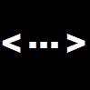
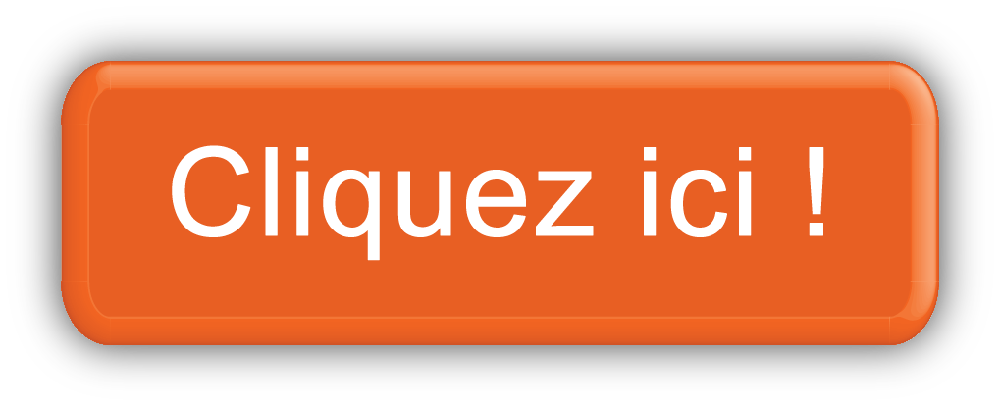

Bienvenue sur le site internet de :
Oui, ce serveur s'appelle ..., ou points de suspension. C'est un serveur discord communautaire parlant de code et graphisme principalement, mais surtout de tout et de rien. Vous voulez nous rejoindre, pas de soucis, veuillez seulement répondre au critère ci-dessous :-Ne pas se limiter avec des critères
-ne pas se sentir obligé à répondre au critères cités
En fonction de ton niveau d'intelligence, tu as pu comprendre qu'il n'y a pas de critères et que l'on accepte tout le monde.

Contribuer
Pour particier au projet de ce site c'est simple, il suffit de l'annoncer dans le salon #site-du-serveur sur notre serveur. Tu sera donc inscrit en tant que créateur, aura un role visuel et si tu participes assez régulièrement, atteindra le rôle de membre++ pour bénéficier d'avantages. Ce projet est donc opensource. Pour télécharger les sources des versions actuellement disponibles cliquez sur le lien ci-dessous.
Historique des versions
Membres contributeurs
communism.exe